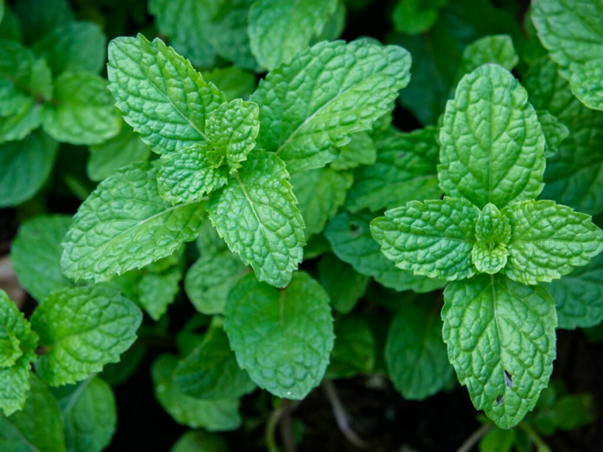
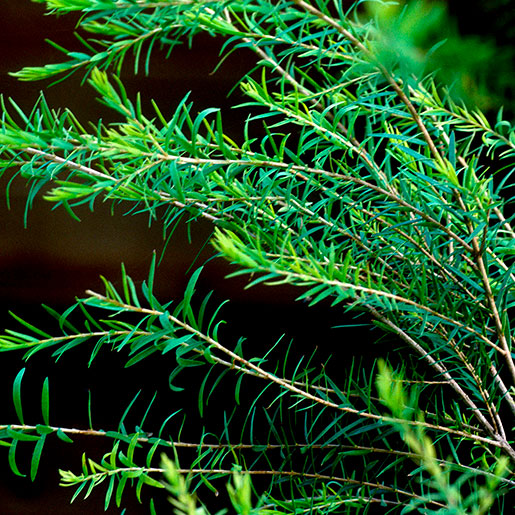
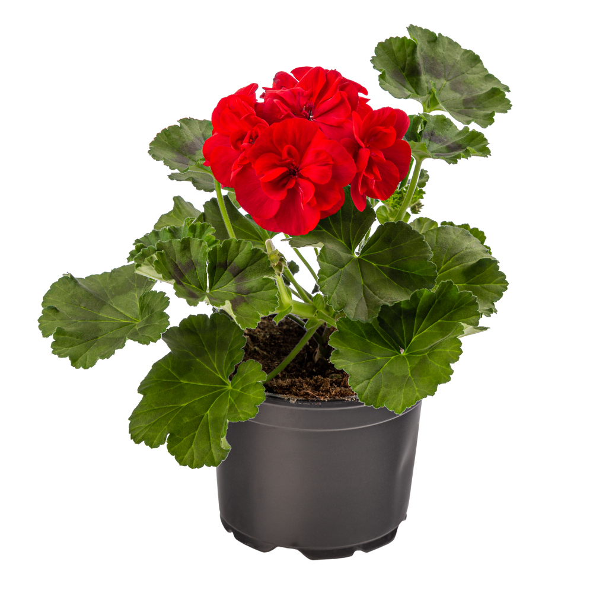
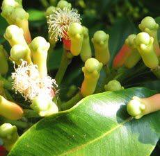

|  |
Peppermint
(Mentha arvensis) |
Leaves, Stems, Flower Buds |
Japan
U.S.
Canada |
Cool
Sharp
Menthol |
Antibacterial, Antifungal, Antiviral, Decongestant, Antispasmotic, Digestive, Pain Reliever |
Arthritis, Headaches, Inflammation, Pain Relief, Viral and Respiratory Infections, Nausea, Muscle Aches, Digestive Stimulant. |
Eucalyptus, Geranium, Ginger, Lavender, Lemon, Frankincense, Rosemary, Tea Tree |
In January 2020 Gastroenterology Journal reported in article summary that peppermint oil was found to improve secondary outcomes such as abdominal pain/discomfort and IBS symptom severity and thus may be considered a worthwhile treatment option for symptom management of IBS (Gastroenterology. (2019). Title of article. *Gastroenterology*, *157*(6), 1-10. https://www.gastrojournal.org/article/S0016-5085(19)41246-8/pdf
Science Daily published a study from the University of California - Irvine that reported improved memory recall, attention span, and increased alertness with the use of peppermint essential oil compared to those in a controlled group. The oil's stimulating effects are beleived to be due to its interaction with neurotransmitters, which play a key role in cognitive function and memory. Reference article: https://www.sciencedaily.com/releases/2023/08/230801131700.htm
) |
 |
Lavender
(Lavendula angustifolia) |
Flowers |
France
Bulgaria |
Delicate
Floral |
Analgesic, Anti-Depressant, Anti-Inflammatory, Anti-Rheumatic, Antiseptic, Antiviral, Cytophylactic (stimulates new cell generation), Decongestant, Deodorant, Diuretic |
Burns, Skin care, Insecticide, Headache Relief, Reduces Inflammation, Pain Relief, Antidepressive, Deodorant, Hair Care |
Eucalyptus, Geranium, Lemon, Lemongrass, Orange, Peppermint, Tea Tree |
One study found that daily inhalation of lavender oil over 28 days significantly lowered anxiety scores and improved sleep quality in participants with generalized anxiety disorder (GAD). Additionally, lavender oil capsules (Silexan) showed comparable efficacy to traditional anxiolytics, working through mechanisms like serotonin regulation and calcium channel inhibition​.
Reference Article:https://bmccomplementmedtherapies.biomedcentral.com/articles/10.1186/s12906-023-04231-1
Research shows Lavender can help with sleep quality, decrease anxiety, and reduce headaches. UT Southestern Medical Center published an article on how essential Oils (Lavender being a favoritoe option) can help women manage pain during and after labor.
(https://utswmed.org/medblog/essential-oils-pregnancy/#:~:text=How%20essential%20oils%20help%20women%20manage%20pain&text=A%20patient%20favorite%20is%20lavender,who%20used%20lavender%20improved%20significantly.) |
 |
Frankincense
(Boswellia serrata) |
Resin |
India |
Warm
Spicy
Woody
Balsamic
-Distinctly different from Middle Eastern Frankincense |
Antitumoral, Immunostimulant, Antidepressant, Muscle Relaxant, Brain Development, Memory Improvement, Neuroprotection |
Immunity Booster, Anti-Inflammatory, Skin Regeneration, Hormonal Balance, Acne, Brain Development, Memory, Neuronal Cell Health, Neuralgia |
Basil, Cedarwood, Chamomile, Cinnamon Bark, Clary Sage, Geranium, Lavender, Myrrh |
The chemistry of frankinsence is amazing. It is high in sesquiterpenes, a naturally occurring chemical that can cross the blood-brain barrier. In 2019, the National Library of Medicine published a report on frankincense, referencing previous studies in humans that suggested its use may improve general memory in the elderly, as well as spatial memory, cancer, chronic inflammatory diseases, brain abnormalities, and memory disorders. The study concluded that frankincense facilitates the acquisition and retention of motor memory in older men with moderate cognitive status (National Library of Medicine, 2019).
Researchers have found that an extract of frankincense shows anti-tumor activity in breast cancer patients. Reference article:https://medicalxpress.com/news/2024-01-boswellia-frankincense-anti-cancer-small.html
Citation: National Library of Medicine. (2019). Frankincense and its impact on memory and cognitive function. https://pmc.ncbi.nlm.nih.gov/articles/PMC7018390 |
 |
Rosemary
(Rosmarinus officinalis) |
Leaves |
Spain
France
U.S. |
Pungent
Woody
Spicy
Camphoric |
Infectious Diseases, Liver Conditions, Impaired Memory, Antitumoral, Hair Growth Stimulant, Pain Reliever, Insecticide, Increase Circulation, Reduce Joint Inflammation, Eye Health |
Hepatitis, Concentration, Hair Growth, Pain Relief, Analgesic, Anti-Inflammatory, Sore Muscles, Cancer, Headache, Digestive Health |
Cedarwood, Frankincense, Jasmine, Lavender, Lemon, Lemongrass, Orange, Peppermint, Tea Tree |
Therapeutic effects of rosemary and its active constituents on nervous system disorders were documented in a 2020 article published in the National Library of Medicine. The anti-spasm, analgesic, anti-inflammatory, anti-anxiety, and memory boosting uses of Rosemary have been validated by neuropharmacological investigations.
Reference article:https://pmc.ncbi.nlm.nih.gov/articles/PMC7491497/
Researchers writing in therapeutic advances in Psychopharmacology highlight rosemary essential oil use being correlated to improvement in concentration, memory and cognitive performance. Reference article: https://www.sciencedaily.com/releases/2012/02/120224194313.htm |
|  |
Tea Tree
(Melaleuca alternifolia) |
Leaves |
Australia
China |
Woody
Herbaceous
Medicinal
Earthy |
Antibacterial, Antifungal, Antiviral, Antiparasitic, Anti-Inflammatory, Antiseptic |
Fungal Infections, Dental Issues, Skin Conditions, Hypertension, Water Retention, Viruses, Antiseptic, Antimicrobial |
Bergamot, Eucalytpus, Lemon, Lavender, Orange, Peppermint, Rosemary |
Results from Curtin University (Australia) clinical studies on the use of tea tree oil for wound healing reveal postive outcomes, including eradication of MRSA established via wound culture, reduction of wound area, and complete wound healing.
Reference article: https://journals.cambridgemedia.com.au/application/files/5216/3244/8180/wham_-_en.pdf
Cincial studies have revealed the promising use of tea tree oil in dermatological applications, particularly acne. Reference article:https://www.cambridge.org/core/journals/parasitology/article/abs/comparison-of-the-efficacy-of-tea-tree-melaleuca-alternifolia-oil-with-other-current-pharmacological-management-in-human-demodicosis-a-systematic-review/901EABE0917E1D00B524C5D319B219A5 |
|  |
Geranium
(Pelargonium graveolens) |
Leaves (Primary), Flowers, Stems |
Egypt
India |
Rose-like
Hints of Citrus
Spice
Mint |
Antibacterial, Antifungal, Antimicrobial, Anti-Inflammatory, Antoxidant, Astringent, Hemostatic, Insecticidal, Bile Duct Dilator, Liver and Pancreas Stimulant, Menopause/PMS Support, Skin Health |
Skin Care, Fungal Infections, Viral Infections, Hormone Balance, Circulatory Problems, Eases Nervous Tension, Pain Relief, Natural Deodorant |
Lavender, Jasmine, Rose, Bergamot, Grapefruit, Patchouli, Chamomile, Clary Sage, Rosemary, Sandalwood, Lemon, Ginger, Cypress, Ylang Ylang |
A study found that Geranium essential oil exhibited considerable inhibitory effects against the fungus Candida albicans.
Reference article:https://pmc.ncbi.nlm.nih.gov/articles/PMC4312398/#:~:text=In%20the%20current%20study%20essential,and%20commercially%20available%20Pelargonium%20oils.
A double-blind clinical trial was conducted on 120 patients undergoing appendectomy. The trial concluded that Geranium essential oil inhalation significantly reduces pain and physiological indices after appendectomy.
Reference article: https://www.sciencedirect.com/science/article/pii/S2405857220301297
The International Journal of Preventitive Mediciane published a clinicla trail on the positive effects of aromatherapy massage using gernaium oil for PMS.
Reference Article:https://journals.lww.com/ijom/fulltext/2018/09000/effects_of_geranium_aromatherapy_massage_on.94.aspx |
 |
Helichrysum
(Helichrysum italicum) |
Flower |
Bosnia |
Herbaceous
Floral
Spicy |
Anicoagulant, Anesthetic, Antispasmodic, Antiviral, Detoxifier, Nerve Regenerator, Skin Care |
Circulatory Disorders, Age Spots, Eczema, Psoriasis, Scar Tissue, Viral Infections, Blood clots, Vericose Veins |
Lavender, Frankincense, Geranium, Clove, Cypress, Basil, Peppermint |
Central Florida Vein and Vascular Center reports that Helichrysum oil can help with blood clots and vericose veins. It serves a dual purpose by helping reduce current vein inflammation while also preventing new vericose veine from developing. Reference article: https://cfvein.com/blog/3-essential-oils-that-help-varicose-veins/#:~:text=Helichrysum%20Oil,also%20help%20promote%20healthy%20circulation.
This study investigated Helichrysum's enhancement of collagen production and skin cell regeneration.
Reference article: https://cfvein.com/blog/3-essential-oils-that-help-varicose-veins/#:~:text=Helichrysum%20Oil,also%20help%20promote%20healthy%20circulation. |
|  |
Clove
(Syzygium aromaticum) |
Bud, Leaf and Stem |
Madagascar,
India,
Sri Lanka,
Caribbean Islands |
Rich
Warm
Sweet
Spicy |
Antioxidant, Analgesic, Anesthetic, Antispetic, Antimicrobial, Antineuralgic, Carminaive, Antiparasitic, Stomach Protectant, Anticonvulsant |
Toothache and Oral Hygiene, Pain Relief, Arthritis, Intestinal Parasites, Digestive Health, Insecticide, Immunity Booster, Infections, Respiratory Health, Antiseptic, Cardiovascular |
Peppermint, Frankincense, Cinnamon, Citronella, Ginger, Lemon, Orange, Rosemary, Nutmeg |
International Journal of Pharmaceutical Sciences published a report on the analgesic and anesthetic effects of clove oil. Reference article:https://www.ijpsjournal.com/article/Analgesic+and+anesthetic+effect+of+clove
BMC Complimentary Medicine and Therapies published a study citing Clove oil and Cinnamon oil in nano-emulson based gel form could be considered as analgesic drugs for inhibiting the inflammation and pain of diseases. Reference article:https://bmccomplementmedtherapies.biomedcentral.com/articles/10.1186/s12906-022-03619-9
|
 |
Lemongrass
(Cymbopogon flexuosus) |
Leaves |
Brazil,
Guatemala,
India |
Lemon
Earthy
Sweet |
Antibacterial, Anxiolytic, Antioxidant, Antifungal, Digestive Health, Aids in Regeneration of Connective Tissue and Ligaments, Dilates Blood Vessels, Circulation, Antiparasitic |
Respiratory/Sunus Infection, Bladder Infection, Digestive Health, Anxiety Relief, Nausea Relief, Skin Health, Parasites, Torn Ligaments and Tendons, Fluid Retention, Salmonella, Vericose Veins |
Lavender, Geranium, Tea Tree, Peppermint, Frankincense, Clove, Rosemary, Cedarwood, Ravensara, Euclayptus |
A 2017 article in the Journal of Pharmaceutical Sciences and Research discusses the effects of Lemongrass oil on Rheumatoid Arthritis when tested on 30 patients. The results showed reduction in pain levels. Reference article:https://www.jpsr.pharmainfo.in/Documents/Volumes/vol9Issue02/jpsr09021734.pdf
This MDPI article discusses the phytochemical composition and pharmacological potential of Lemongrass in a preventative role in oxidative damage and various human diseases. Reference article: https://www.mdpi.com/2673-9623/2/4/16 |
 |
Sage
(Salvia officinalis) |
Leaves and Flowers |
Spain,
Italy,
France,
Bulgaria |
Herbaceous
Earthy
Sweet |
Hormone Balancing, Estrogenic, Antitumoral, Antifungal, Antispasmodic, Antiviral, Circulatory Stimulant, Laxative, Depurative, Gallbladder Stimulant, Anti-Inflammatory, |
Menopause, Menstrual Problems/PMS, Mental Fatigue, Anxiety, Pain Relief, Digestive Health, Oral Health, Blood Sugar levels in type 1 and 2 diabetics |
Bergamot, Cinnamon, Geranium, Eucalytpus, Jasmine, Lavender, Lemon, Orange, Rosemary, Tea Tree, Vetiver |
Edorium Journals published a study on Sage and its potential for use for preventing and curing chronic illnesses. The study found Lemograss has promising results in combating diabetes, cancers, and Alzheimer's.
Related article:https://www.ijcasereportsandimages.com/archive/2013/012-2013-ijcri/002-12-2013-hamidpour/ijcri-00212201322-hamidpour-full-text.php
The Global Journal of Medical Research printed an article in 2013 regarding Sage and its potential to prevent and cure illnesses such as obesity, diabetes, depression, dementia, lupus, autism, heart diseas, and cancer.
Related article:https://globaljournals.org/GJMR_Volume13/1-Chemistry-Pharmacology.pdf |